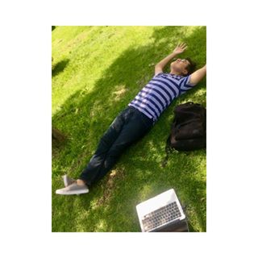

Datos Personales |
| Nombre: |
Luis Diego Jiménez Delgado |
 |
|
| Fecha de Nacimeinto: |
3 de agosto del 2000 |
| Signo zodiacal: |
Leo |
| Direccion: |
Corumbá 550, |
| Correo Electrónico: |
luisjimenez6245@hotmail.com |
| Twitter: |
luisjimenez6245 |
| Facebook: |
Luis Jiménez |
| Intagram: |
l_jimenez6245 |
Sitaucion Académica |
| Nivel Medio Superior: |
Cecyt #9 |
 |
|
| Promedio: |
8.8 |
| Nivel Superior: |
ESCOM |
| Promedio acutal: |
8.0 |
| Semestre |
3ro |
Otros Datos |
| Pasatiempo: |
|
|
|
| Materias que me gustan: |
- Teoría Computacional
- Tecnologías Web
|
| Materias que menos me gustan: |
- Teoría Computacional
- Tecnologías Web
|
| Canción Favorita: |
California Dreamin' - José Feliciano |
| Pelicula Favorita: |
El gato con botas |
|
Noticias |
Incendios en el Amazonas
|
|
El gobierno de Brasil informó que rechazará la oferta de ayuda ofrecida por el grupo de países del G7 (Estados Unidos, Francia, Alemania, Japón, Canadá, Reino Unido e Italia) para ayudar a combatir los incendios que consumen la Amazonía.
Este lunes, durante la cumbre de los líderes de los siete países en la localidad francesa de Biarritz, el presidente de Francia, Emmanuel Macron, informó sobre la creación de un fondo de US$22 millones para colaborar en la lucha contra el fuego.
El G7 aprueba un fondo de US$22 millones para ayudar a combatir los incendios en el Amazonas
"Agradecemos la oferta, pero tal vez esos recursos sean más útiles para reforestar a Europa", dijo tras el anuncio Onyx Lorenzoni, jefe de gabinete del presidente de Brasil, Jair Bolsonaro, según los medios brasileños.
"Macron no pudo prevenir un incendio en una iglesia que es considerada patrimonio de la humanidad y ¿ahora quiere darnos lecciones?", agregó, en referencia a las llamas que devastaron la catedral de Notre Dame, en París, el pasado abril.
El ministro de Medio Ambiente de Brasil, Ricardo Salles, había dicho que su país agradecería la financiación del G7, pero después de una reunión entre Bolsonaro y sus ministros el gobierno brasileño cambió el discurso.
|
Fake news, aportes de campaña y transparencia
|
|
A esta altura, con su sexta edición al hilo, la Media Party (https://mediaparty.info/es/ ) es un evento tan instalado como indispensable: cada año desde 2014, alrededor de 2500 emprendedores, periodistas, programadores de software y diseñadores de cinco continentes se dan cita para discutir, debatir, conocer y aprender sobre el presente –y sobre todo adivinar el futuro– del periodismo. Y como en cada edición, en ésta que se desarrollará entre el jueves 29 y el sábado 31 en la Ciudad Cultural Konex también aparecerán los casos que refrendan el quehacer correcto y señalan rumbos posibles, aunque nunca sellados, dicen. Es el ejemplo de ProPublica (https://www.propublica.org/ ), una organización sin fines de lucro dedicada al periodismo de investigación que, desde su inauguración en 2007, ha sido señalada en el mundo entero como el modelo a seguir, con su combinado de riqueza periodística, éxito financiero –mediante donaciones de importantes filántropos y aportes de los lectores– y la entrega de importantes investigaciones a grandes medios sin cobrarles por ello. Su objetivo es difundir lo que investigan.
|
Me hackearon mi cuenta de Instagram y perdí mi negocio
|
|
Bree Kotomah, una joven británica de 23 años, casi se dio por vencida en el momento más exitoso de su floreciente carrera como diseñadora de moda.
En noviembre de 2018 unos piratas informáticos comprometieron la cuenta de Instagram de su marca Boresa Kotomah, que en ese momento solo contaba con la plataforma como forma de promoción y venta.
"Desafortunadamente, en ese momento ejecutaba todo en Instagram, así que cuando mi cuenta desapareció, todo el negocio desapareció", le dijo la joven a BBC Radio 5 Live.
Kotomah se despertó una mañana y su cuenta había sido eliminada.
"Instagram decía que había violado algunos términos y que había hecho ciertas cosas que sé que no hice", expuso.s
|
|